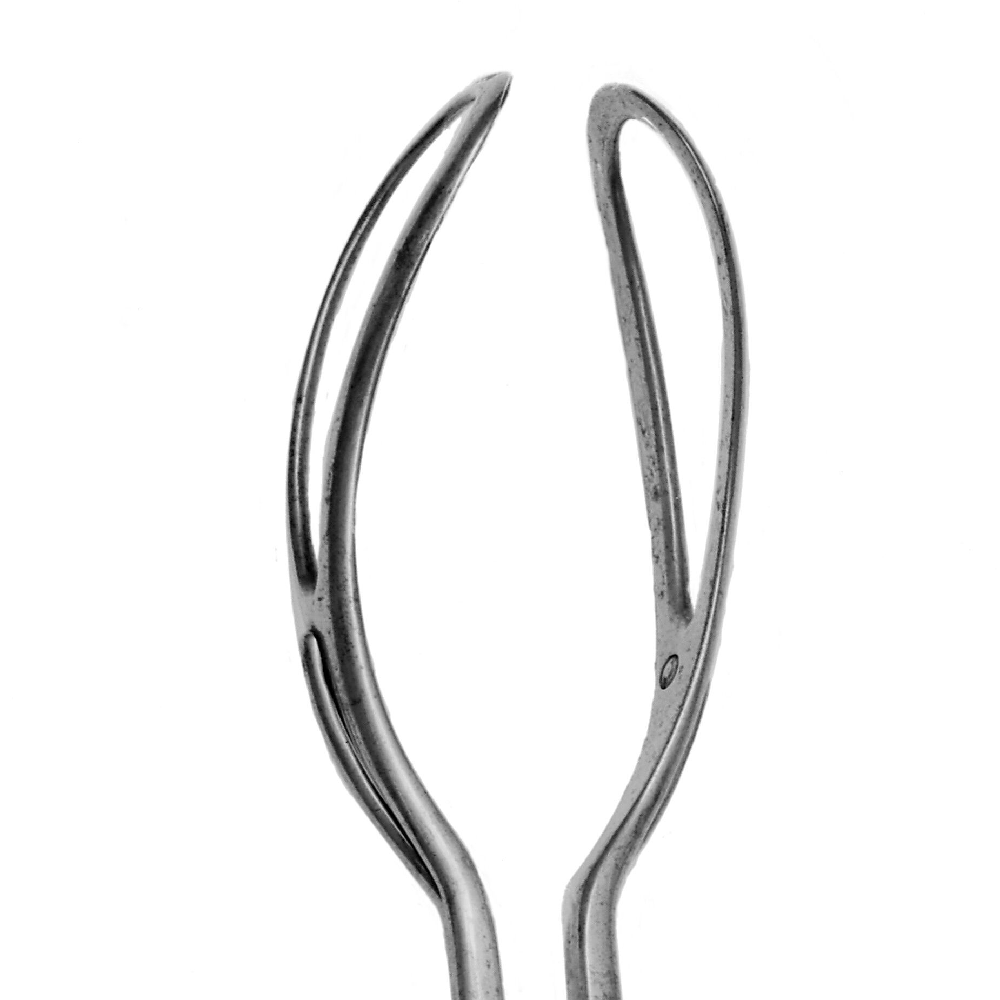

BiparietomalomentonianaA fenestra não é para a orelha
"A fenestra — o buraco da colher — é para encaixar a orelha do bebê."
Não é. A orelha fica do lado de fora. Esse é um dos erros mais clássicos de prova — e desmontá-lo é metade desta página.
Muitos alunos acham que a fenestra — o buraco da colher do fórceps — é para encaixar a orelha do bebê. Não é. A orelha fica do lado de fora. Esse é um dos erros mais clássicos de prova, e desmontá-lo é metade desta página. A outra metade é uma palavra comprida que vale um ponto: onde, exatamente, a colher abraça o crânio.
A pegada ideal: biparietomalomentoniana
A pegada ideal do fórceps é a biparietomalomentoniana. O nome é longo de propósito — decomponha para memorizar: bi-parieto (a colher passa pela região parietal, dos dois lados) + malo-mentoniana (região malar-mentoniana, bochecha-queixo). A colher abraça o crânio pela lateral, apoiando parietal e malar-mentoniana. E o encaixe correto depende de conhecer a variedade de posição — sem saber para onde o bebê olha, não há como posicionar a colher na pegada certa (é o fio que amarra esta página à leitura da variedade).
Recurso de fixação: a palavra é tão comprida que serve de desafio de soletração — quebrá-la em sílabas (bi-pa-rie-to-ma-lo-men-to-ni-a-na) é o truque para não errar a grafia na prova. Grafia canônica: palavra única (descartar a variante hifenizada).
A pegada biparietomalomentoniana no crânio
Interativo: toque para ver o encaixe certo e o errado.
A colher abraça o crânio pela lateral, apoiando região parietal + malar-mentoniana (encaixe correto, verde). O hotspot contrasta com a pega errada (vermelho/amarelo) — é a topografia que a foto não mostra: onde, exatamente, a colher deve pousar. A orelha não entra na fenestra.
A fenestra não é para a orelha
A fenestra é o vão/buraco da colher. Ela não serve para acomodar a orelha do bebê — a orelha permanece fora. É um erro de aluno tão difundido que virou pegadinha recorrente: mostram a colher fenestrada e insinuam a orelha. Quando a pega está correta, inclusive, a fenestra quase não se sente ao toque (é o terceiro critério de Laufe).

A fenestra real — o vão da colher
A fenestra é o espaço ovalado aberto no corpo da colher, visível no centro da lâmina curva. A borda metálica contorna a abertura e forma uma superfície ampla que acompanha a convexidade da cabeça fetal. O ponto é físico: a fenestra não é uma "janela para a orelha" — é característica estrutural da lâmina (aligeira e ajuda a apreensão). Não confundir com o espaço entre as duas colheres nem com a articulação.
M0001472: Axis traction obstetrical forceps (tipo de Alexander Russell Simpson), Wellcome Collection — CC BY 4.0 · página de origem
Quiz — fixação
A pegada ideal do fórceps é a __________, que apoia a colher na região parietal e na região malar-mentoniana.
B) Correta. A pegada ideal é a biparietomalomentoniana — parietal (dos dois lados) + malar-mentoniana.
A) É um diâmetro cefálico, não uma pega. Occipitofrontal descreve um plano do polo, não onde a colher apoia.
C) Nome de aparência anatômica, mas não é a pega. A banca mistura vocabulário de mecanismo de parto com pega instrumental para confundir.
D) É diâmetro (suboccípito-bregmática), não pegada. O discriminador é que a pega descreve onde a colher apoia (parietal + malar-mentoniana), não um diâmetro.
Julgue: "A fenestra da colher do fórceps serve para acomodar a orelha do feto, protegendo-a durante a tração."
F) Correta. A fenestra não é para a orelha — a orelha fica do lado de fora (mito clássico, PB4). É característica construtiva da colher; quando a pega está correta, quase não é perceptível ao toque (critério de Laufe).
V) Aceita o erro que a prova planta. Mostrar a colher vazada e sugerir um "encaixe anatômico" é a armadilha; a orelha permanece fora.
O fio para a próxima página
Sabido qual instrumento e onde encaixá-lo, falta a pergunta que trava a mão do obstetra — antes de aplicar, sete caixas precisam estar marcadas.
A pega é biparietomalomentoniana; a fenestra não é para a orelha.